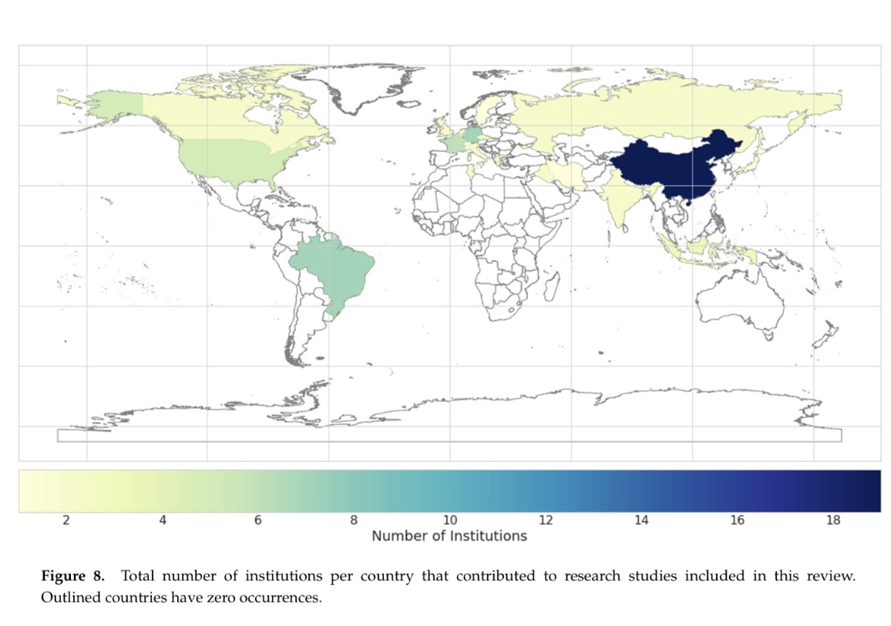

Author: Beining Xu
Date: 6 Mar 2024
(*)African soil properties and nutrients mapped at 30 m spatial resolution using two‐scale ensemble machine learning
Earth Observation Data-Driven Cropland Soil Monitoring: A Review
$y(\phi, \theta, d) = d + x_1(\phi, \theta) + x_2(\phi, \theta) + \cdots + x_p(\phi, \theta)$
African soil properties and nutrients mapped at 30 m spatial resolution using two‐scale ensemble machine learning
(*)Earth Observation Data-Driven Cropland Soil Monitoring: A Review
A review of Earth Observation.
After an overview of this paper, I judge that this paper is not too useful for my practical work, but…

Obviously, China have more contribution than other countries.
Machine learning and soil sciences: a review aided by machine learning tools (Recommended)
China Soil Database - a national soil data set based on the second soil census (Chinese version, Instructive)
Prediction of national forest soil organic matter content based on GF-1 remote sensing data (Chinese version, Instructive)
Advanced methods like Random Forests have shown rapid adoption due to their versatility in various soil science applications,
Better than traditional models like SVMs and Decision Trees.
Advanced ML methods generally outperform simpler statistical models
capture complex non-linear relationships more effectively
ML methods are good at predict evolution of the soil
China has a detailed database, which is the result of a professional and authoritative investigation team, which has some inspiration for our next research. Some countries and regions may have similar surveys, and if we can take advantage of these studies, for example, using this kind of exhaustive survey as a good test set to train our model built by data from Google Earth, we can increase the robustness of the model.
Input: Different categories according to vegetation types
Output: SOM, soil organic matter (SOC)